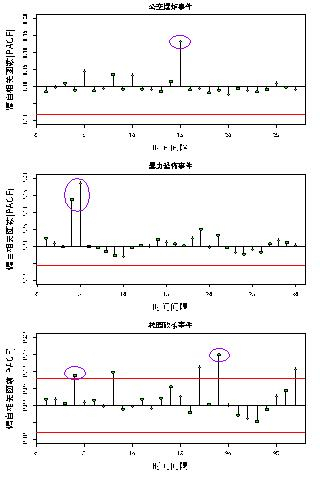
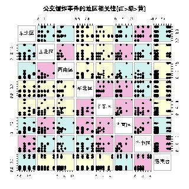

|


闻媒体、社交网络的数据中进行了事件提取。在这些
提取出的危害公共安全事件中，我们尝试发现事件间
的关联规律。比如，同系列事件中，事件之间在时间、
空间的传播会有一定规律；而不同系列事件之间的发
生则会有一些共性规律，这些规律对于我们进一步了
解危害公共安全事件发生规律、对危害公共安全事件
进行预测具有巨大的意义。
在本节中，我们首先从时间、空间、语义三个方
面进行事件的特征提取；然后通过数据可视化的方法
对同系列事件间触发关系、不同系列事件间共性规律
进行定性发现[? ?
]，提出一些假设猜想；最后通过相
关性度量最大信息量相关系数(MIC)，对事件之间的关
联度进行定量分析，做出总结。
4.1.1
特征提取
危害公共安全事件的特征涵盖时间、空间、新闻
媒体、社交网络等多维度，如事件发生的时间、事件
发生的地点、事件发生的媒体报道情况。为了更详细
地表征每一个事件，我们从时间、空间、语义三个方
面对事件进行了特征提取，共提取近40个特征。具体
特征条目如附录一所示。
4.1.2
同系列事件触发关系分析
表征一个事件有很多特征，比如事件发生的时间、
事件发生的地点、事件发生的媒体报道情况。为了更
详细地表征一个事件，我们从时间、空间、语义三个
方面进行特征提取，共提取近40个特征。
(1)时间触发关系研究
同系列事件在时间上存在一定的触发关系。在一
定时间范围内，一起系列危害公共安全事件的发生很
可能会对另一起事情的发生产生触发作用。我们使用
最大信息量相关系数(MIC)对公交车爆炸事件、暴力恐
怖事件、校园砍杀事件3类事件进行了时间维度相关性
分析，结果如图??所示。
从图??中我们可以看出：每起公交车爆炸事件时
间分布特征和15天前的分布特征相似，每起暴力恐怖
事件时间分布特征和5天前的分布特征相似；每起校园
砍杀事件时间分布特征与4天前至18天前的事件分布
特征均有一定的相似度。此外我们发现，三种系列事
件在以月为时间粒度的规律分布上并无相关性可循。
每起公交车爆炸事件时间分布特征和15天前的分
布特征相似，每起暴力恐怖事件时间分布特征和5天
前的分布特征相似；每起校园砍杀事件时间分布特征
与4天前至18天前的事件分布特征均有一定的相似度。
此外我们发现，三种系列事件在以月为时间粒度的规
律分布上并无相关性可循。
(2)空间触发关系研究
我们对3类事件在空间触发关系进行分析。首先我
们以省级单位为空间划分单位对各个省危害公共安全
事件发生频次做相关性分析，但并没有发现明显的相
关性特征。然而当我们将地理分区作为空间划分单位，
每个地理分区包依照空间位置含若干个省，对各个地
区事件发生频次做相关性分析，发现各地区事件发生
频次之间具有较为明显的相关性特征。如图??∼??所
95%置信水平
事件复发显著间隔
图
4:
同系列事件时间相关性分析
图
5:
公共交通事件空间传播变化规律
示。
我们以校园砍杀事件为例进行分析，校园砍杀事
件中，东北区、西北地区、港澳台地区和其他地区的相
|